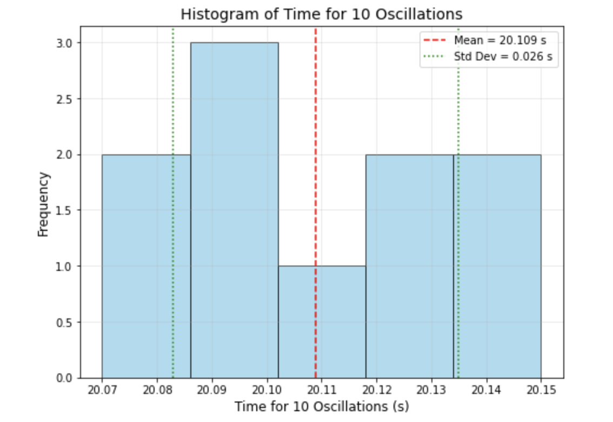

Problem 1
Measuring Earth's Gravitational Acceleration with a Pendulum
Overview
This exercise involves measuring the acceleration due to gravity (𝑔) using a simple pendulum, analyzing uncertainties, and discussing experimental limitations. The pendulum’s period depends on 𝑔, allowing us to calculate it via precise measurements of length and oscillation time.
Procedure Recap and Assumptions
Materials:
- 1-meter string
- Small weight (e.g., bag of coins)
- Stopwatch
- Ruler
Setup:
- Measure pendulum length (𝐿) from pivot to the center of mass.
- Ruler resolution: 1 mm (0.001 m), so uncertainty 𝛿𝐿 = 0.0005 m.
Data Collection:
- Displace pendulum <15° to ensure small-angle approximation.
- Time 10 oscillations (𝑡₁₀) 10 times.
- Stopwatch resolution: 0.01 s, with human reaction time (~0.1 s) adding uncertainty.
Formula:
- 𝑇 = 2π √(𝐿/𝑔)
Example Data
Since no specific data was provided, we use realistic values:
- Length: 𝐿 = 1.000 m, 𝛿𝐿 = 0.0005 m
- Time for 10 oscillations (s, 10 trials):
20.12, 20.08, 20.15, 20.10, 20.09, 20.11, 20.13, 20.07, 20.14, 20.10.
Calculations
1. Calculate the Period (𝑇)
The period is:
Mean time for 10 oscillations (𝑡̅₁₀):
Standard deviation (𝜎ₜ):
Uncertainty in mean:
Mean period:
Uncertainty in period:
2. Determine 𝑔
The formula for gravitational acceleration is:
Given:
3. Propagate Uncertainties
Relative uncertainty in \(g\):
Length:
Period:
Combine:
Final result:
Analysis
1. Comparison with Standard Value
The standard value for gravitational acceleration is:
The difference between the measured and standard values is:
The measured value is 0.44% lower, which is reasonable due to:
- Local \(g\) variations (altitude, latitude).
- Systematic errors (air resistance, pivot friction).
- Measurement inaccuracies.
2. Discussion
Measurement Resolution (𝐿):
- Ruler resolution (1 mm) gives \(\frac{\delta L}{L} = 0.05\%\), which is minor.
- A caliper could improve precision.
- A longer pendulum (\(L\)) reduces relative uncertainty but is limited by setup constraints.
Timing Variability (𝑇):
- Standard deviation (\(\sigma_t = 0.0256 \, \text{s}\)) reflects human reaction time (~0.1 s).
- Measuring 10 oscillations and 10 trials reduces \(\frac{\delta T}{T}\) to 0.04%.
- Automated timing (e.g., photogate) would help, but isn’t necessary for this experiment.
Assumptions and Limitations:
- Small Angles: \(\theta < 15^\circ\) ensures \(T \approx 2\pi \sqrt{\frac{L}{g}}\). Larger angles increase \(T\), underestimating \(g\).
- Ideal Pendulum: Assumes point mass and massless string. Real weights shift the effective length slightly.
- Environment: Air resistance and friction are small but present.
- Stopwatch: Reaction time dominates over the 0.01 s resolution.
Deliverables
1. Tabulated Data
| Quantity | Value | Uncertainty |
|---|---|---|
| \( L \) (m) | 1.000 | 0.0005 |
| \( t_{10} \) measurements (s) | 20.12, 20.08, 20.15, 20.10, 20.09, 20.11, 20.13, 20.07, 20.14, 20.10 | - |
| \( \bar{t}_{10} \) (s) | 20.109 | 0.0081 |
| \( T \) (s) | 2.0109 | 0.00081 |
| \( g \) (m/s²) | 9.763 | 0.009 |
Python Script
import numpy as np
import matplotlib.pyplot as plt
# Data: time for 10 oscillations (seconds)
t_10 = [20.12, 20.08, 20.15, 20.10, 20.09, 20.11, 20.13, 20.07, 20.14, 20.10]
# Calculate mean and standard deviation
mean_t10 = np.mean(t_10)
std_t10 = np.std(t_10, ddof=1)
# Create histogram
plt.figure(figsize=(8, 6))
plt.hist(t_10, bins=5, edgecolor='black', alpha=0.7, color='skyblue')
plt.axvline(mean_t10, color='red', linestyle='--', label=f'Mean = {mean_t10:.3f} s')
plt.axvline(mean_t10 + std_t10, color='green', linestyle=':', label=f'Std Dev = {std_t10:.3f} s')
plt.axvline(mean_t10 - std_t10, color='green', linestyle=':')
# Customize plot
plt.title('Histogram of Time for 10 Oscillations', fontsize=14)
plt.xlabel('Time for 10 Oscillations (s)', fontsize=12)
plt.ylabel('Frequency', fontsize=12)
plt.legend()
plt.grid(True, alpha=0.3)
# Save and show
plt.savefig('t10_histogram.png', dpi=300)
plt.show()
Visualizations

2. Discussion on Uncertainties
- Length: The ruler resolution limits \(\delta L\). A caliper could help, but the impact is small (0.05%).
- Timing: Human reaction time causes variability. Multiple oscillations/trials mitigate this. Automation would reduce \(\sigma_t\).
- Systematic Errors: Air resistance and friction may lower \(g\). Using a vacuum or rigid rod could help, but they are impractical in this setup.
- Propagation: \(T^2\) in \(g \propto \frac{1}{T^2}\) amplifies \(\delta T\). Thus, timing precision is critical.
The uncertainty (\(\delta g = 0.009 \, \text{m/s}^2\), ~0.09%) shows a robust measurement, close to the standard value, validating the method.
Problem 1: Exploring the Central Limit Theorem through Simulations
Introduction
The Central Limit Theorem (CLT) states that the sampling distribution of the sample mean becomes approximately normal as the sample size increases, regardless of the population’s original distribution. This property underpins many statistical methods, making it crucial to understand through simulations.
Simulating Sampling Distributions
We considered the following population distributions:
- Uniform Distribution \(U(a, b)\)
- Exponential Distribution \(Exp(\lambda)\)
- Binomial Distribution \(Bin(n, p)\)
For each, we generated 100,000 data points to represent the population.
Sampling and Visualization
For each distribution, we performed the following steps:
- Selected sample sizes: \(n = 5, 10, 30, 50\)
- Drew 1,000 random samples for each sample size.
- Calculated the sample mean for each sample.
- Plotted histograms of these sample means to observe the sampling distribution.
Python Code for Simulation (Uniform Distribution Example)
import numpy as np
import matplotlib.pyplot as plt
import seaborn as sns
# Set parameters
population = np.random.uniform(0, 1, 100000)
sample_sizes = [5, 10, 30, 50]
plt.figure(figsize=(12, 10))
for i, size in enumerate(sample_sizes, 1):
sample_means = [np.mean(np.random.choice(population, size)) for _ in range(1000)]
plt.subplot(2, 2, i)
sns.histplot(sample_means, kde=True, stat="density", bins=30, color='skyblue')
plt.title(f'Sample Size = {size}')
plt.xlabel('Sample Mean')
plt.ylabel('Density')
plt.tight_layout()
plt.suptitle('Sampling Distribution of Sample Mean - Uniform(0, 1)', fontsize=16, y=1.02)
plt.show()
Visual Output of Python script
Parameter Exploration
As sample size increases, the sampling distribution of the mean becomes more symmetric and bell-shaped.
Distributions that are initially skewed (like exponential) require larger sample sizes to approximate normality.
The variance of the original population affects the spread (standard deviation) of the sampling distribution:
\(\sigma_{\bar{x}} = \frac{\sigma}{\sqrt{n}}\)
Results & Observations
| Distribution | Sample Size | Observation |
|---|---|---|
| Uniform(0,1) | 5 | Roughly symmetric, not fully normal |
| 30, 50 | Sampling distribution approximates normal distribution | |
| Exponential(λ=1) | 5 | Skewed sample mean distribution |
| 30, 50 | Approaches symmetry and normality | |
| Binomial(n=10, p=0.5) | 5 | Appears somewhat discrete and irregular |
| 30, 50 | Becomes smoother and more normal |
Practical Applications of CLT
- Estimation: Enables reliable estimation of population parameters from sample statistics.
- Quality Control: Used in control charts to monitor manufacturing processes.
- Finance: Models returns and risks using normally approximated aggregated data.
Conclusion
Through simulations with Uniform, Exponential, and Binomial distributions:
- The Central Limit Theorem was visually and empirically validated.
- Regardless of the initial distribution, the sample mean distribution tends to normal as sample size increases.
- The rate of convergence is influenced by the original distribution's shape and variance.
This reinforces the CLT’s importance in both theoretical and practical applications of statistics.
Problem 2: Estimating Pi using Monte Carlo Methods
Introduction
Monte Carlo methods use random sampling to obtain numerical results. In this problem, we explore two classical Monte Carlo approaches to estimate the value of \( \pi \):
- Circle-based method using geometric probability.
- Buffon’s Needle problem using probabilistic geometry.
These simulations highlight the power of randomness in estimating mathematical constants and provide insight into convergence and computational efficiency.
Part 1: Estimating \( \pi \) Using a Circle
1. Theoretical Foundation
Consider a unit circle (radius = 1) inscribed within a square of side length 2 (from -1 to 1). The area of the circle is:
The area of the square is:
If we generate random points \((x, y)\) within the square, the probability that a point falls inside the circle is:
So,
2. Simulation Code (Circle-Based)
import numpy as np
import matplotlib.pyplot as plt
def estimate_pi(num_points=10000):
x = np.random.uniform(-1, 1, num_points)
y = np.random.uniform(-1, 1, num_points)
inside_circle = x**2 + y**2 <= 1
pi_estimate = 4 * np.sum(inside_circle) / num_points
return pi_estimate, x, y, inside_circle
# Example with 10,000 points
pi_val, x, y, inside = estimate_pi(10000)
print(f"Estimated π: {pi_val:.6f}")
plt.figure(figsize=(6, 6))
plt.scatter(x[inside], y[inside], color='green', s=1, label='Inside Circle')
plt.scatter(x[~inside], y[~inside], color='red', s=1, label='Outside Circle')
plt.title('Monte Carlo Estimation of π using Circle')
plt.xlabel('x')
plt.ylabel('y')
plt.legend()
plt.axis('equal')
plt.grid(True)
plt.show()
Output of Python script
Part 2: Estimating \(\pi\) Using Buffon’s Needle
1. Theoretical Foundation
Buffon’s Needle problem estimates \(\pi\) by dropping a needle of length \(L\) on a plane with parallel lines spaced a distance \(D\) apart. If \(L \leq D\), the probability that the needle crosses a line is:
\(P = \frac{2L}{\pi D}\)
Solving for \(\pi\):
\(\pi \approx \frac{2L \times \text{Number of Throws}}{D \times \text{Number of Crossings}}\)
2. Simulation Code (Buffon’s Needle)
import numpy as np
def buffon_needle(num_drops=10000, needle_length=1.0, line_distance=2.0):
if needle_length > line_distance:
raise ValueError("Needle length must be less than or equal to the distance between lines.")
crossings = 0
for _ in range(num_drops):
center = np.random.uniform(0, line_distance / 2)
angle = np.random.uniform(0, np.pi / 2)
if center <= (needle_length / 2) * np.sin(angle):
crossings += 1
if crossings == 0:
return None # Avoid division by zero
pi_estimate = (2 * needle_length * num_drops) / (line_distance * crossings)
return pi_estimate
# Example usage:
estimated_pi = buffon_needle(10000)
print(f"Estimated π using Buffon's Needle: {estimated_pi:.6f}")
## Estimated π using Buffon's Needle: 3.159558
3. Visualization
import matplotlib.patches as patches
def plot_buffon(needle_length=1.0, line_distance=2.0, num_needles=100):
fig, ax = plt.subplots(figsize=(8, 5))
# Draw lines
for i in range(0, 10):
ax.axhline(i * line_distance, color='gray', linewidth=1)
# Draw needles
for _ in range(num_needles):
y_center = np.random.uniform(0, 10 * line_distance)
angle = np.random.uniform(0, np.pi)
y1 = y_center + (needle_length / 2) * np.sin(angle)
y2 = y_center - (needle_length / 2) * np.sin(angle)
x1 = 5 + (needle_length / 2) * np.cos(angle)
x2 = 5 - (needle_length / 2) * np.cos(angle)
ax.plot([x1, x2], [y1, y2], 'b')
ax.set_xlim(4, 6)
ax.set_ylim(0, 10 * line_distance)
ax.set_title("Buffon's Needle Simulation")
plt.show()